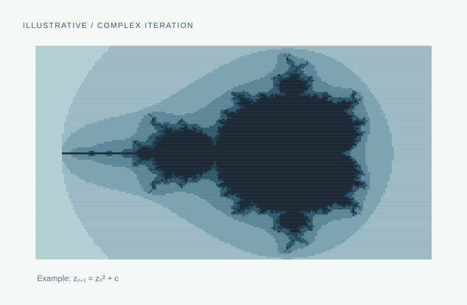

05 / Mathematics
Fractals & dynamical systems
Investigating the long-term behavior of iterative mathematical systems and the geometric complexity they generate.

01 / Overview
Overview
My mathematical research interests include fractals, iterative processes, and nonlinear dynamical systems. These topics connect geometric structure to the evolution of a system under repeated application of a transformation.
02 / Background
Scientific context
A discrete dynamical system evolves by iteration: a state is repeatedly mapped to its successor. Even simple nonlinear rules can produce fixed points, cycles, bifurcations, sensitive dependence, and fractal boundaries. These structures provide a mathematical language for complexity across many fields.
03 / Motivation
Research questions
- How does the geometry of invariant sets arise from repeated iteration?
- What determines whether an orbit approaches a fixed point, cycle, or more complicated invariant set?
- How do changes in parameters alter stability and global structure?
04 / Approach
Methods & techniques
Mathematical analysis
Study iterated maps, orbit structure, limiting behavior, and local stability.
Computational exploration
Use numerical iteration and visualization to explore parameter dependence and fractal geometry.
Research development
Add the specific families of maps, formal results, and research statements associated with my work.
05 / Progress
Project notes
The graphic shown here is an illustrative example of fractal iteration, not a figure from my research. The page is ready for the exact dynamical systems, statements, and results from my mathematics projects.
06 / Supporting material
Figures & research outputs
Insert a theorem illustration, bifurcation diagram, or visualization of the particular maps you study.
Image or publication to be addedPublication links, posters, and code repositories will appear here once they are selected and approved for sharing.